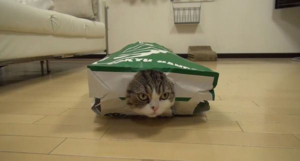

Home | Grumpy Cat | Vacuum Kitty | MaruBoxLover | Colonel Meow |
Maru is a male Scottish Fold cat in Japan who has become popular on YouTube.His owner, who does not show her face on camera or speak in the videos, posts videos
under the account name 'mugumogu'. The videos are edited to include title cards in
English and Japanese setting up the events of the video, and often show Maru playing in cardboard boxes, indicated by "I love a box!" in his introduction video.